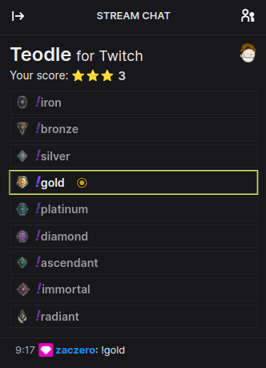

A handy userscript for Twitch.tv which adds some more Teodle integration.

| Name | Link | Chrome | Firefox | OpenSource |
|---|---|---|---|---|
| Violentmonkey | Link | ✔ | ✔ | ✔ |
| Greasemonkey | Link | ✔ | ✔ | |
| Tampermonkey | Link | ✔ | ✔ |
Install:RemoveThe script is open source and is publicly available. Everyone can audit its functionality and verify that it does not contain any malicious code. Only basic JavaScript knowledge is required to do so.
No.
It only collects your Twitch username for the purpose of score keeping.
Whenever there is a new version available, the userscript manager will notify you about it. You will have to simply confirm the update with a single click.
Please use the GitHub issue tracker or contact me directly (email below). Don’t forget to describe the problem and include the steps to reproduce it. It would be helpful if you could also attach the console output from the browser (F12).
Email: kamil@monicz.pl
Source code on GitHub: Zaczero/teodle
License: AGPL-3.0